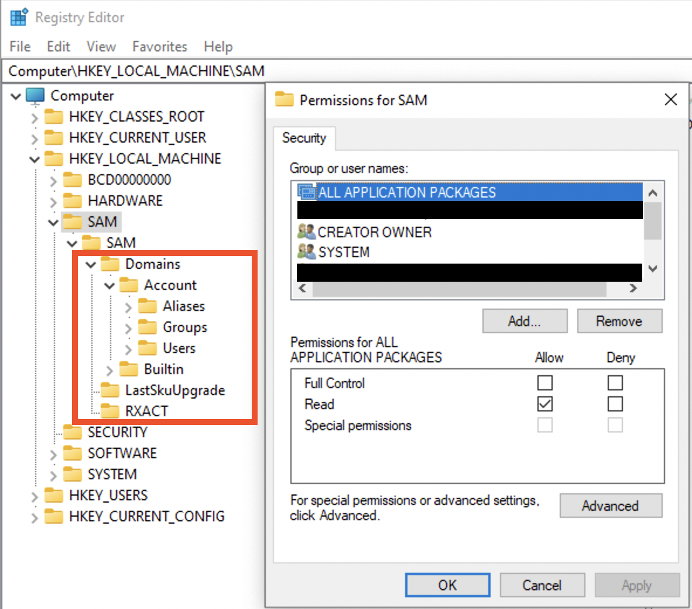

Prior to Windows NT, ini files were used. These were substituted with Windows registry to keep initialization and configurations. Some changes are also logged by the registry.
⚠️ If the OS was reinstalled, the registry is backed up (
windows.old) [5]. However, Windows.old is almost totally deleted after 28 days [9] .
Structure
Hives are the first “folders” under the root folder. For example, under the root folder HKEY_LOCALMACHINE there is a set of folders. These are hives (purple rectangle). All the folders inside are keys and subkeys (green rectangle).

There are two types: system related files and user related. System related ⚙️:
- SAM
- System
- Security
- Software
- AmCache
User related (specific to this user) 👨💻:
- NT User.dat
- User Class.dat
When the OS boots up, it loads the handles to these hives into memory (HK... - handle key):
HKEY_LOCAL_MACHINE(HKLM)HARDWARE🍇
HKEY_CLASSES_ROOT(HKCR). Filled up at boot time with the data fromHKEY_LOCAL_MACHINE\Software\Classeskeys and data.HKEY_CURRENT_CONFIG(HKCC) 🍇. It’s a pointer toHKEY_LOCAL_MACHINE\System\CurrentControlSet\HardwareProfiles\Current.HKEY_USERS(HKU)HKEY_CURRENT_USER(HKCU) 🍇 . Information pulled fromNTUset.dat.
Some of the settings can only be found on a live system (🍇). SAM hive and all of its subkeys will not be accessible.
⚠️ There is no CurrentControlSet on a dead-box. To determine which one of the ControlSets is current, use Select\Current key (usually 1, which means ControlSet001). Last Known Goog is usually 2 (which means ControlSet002), used for recovery purposes.
Non-live registry (missing some hives) can be accessed from a disk image for example. C:\Windows\System32\config contains 4 main hives: SAM, System, Security and Software. C:\Windows\appcompat\Programs contains amcahce.hve. User-related files mentioned above can be found at C:\Users\%Username%\NTUser.dat and C:\Users\%Username%\AppData\Local\Microsoft\Windows\UsrClass.dat. So, those mysterious XXX.dat files are actually a registry file.
SAM
On disk it’s located here: C:\Windows\System32\config\SAM. This file cannot be edited through the RegEdit unless admin grants you permissions (data marked with red is not accesssible unless the access is granted by admin):

However, this file can be accessed on a dead-box system. ⚠️ Also, this file only stores local creds, not domain or Microsoft account credentials!
SAM is a database of files, and it stores all the information about all the users: login information, password hashes, group information.
🛠 Registry Explorer (Eric Zimmerman’s tool) can collect all user from the SAM and Profile files and show them assembled. This data can be exported to Excel, for example.
Local User Accounts
For each user there will be a separate sub-key under SAM\SAM\Domains\Account\Users. The sub-keys names are actually RID of the user in hex. Each sub-key will have several values. Record V contains static information (username, password length etc), while record F contains constantly updated information like timestamps 🕰:
- Last login is a little endian 8 byte value at
0x08-0x0foffset. - Last password change time at offset
0x18-0x1f, 8 bytes long. - Last failed logon time is at offset
0x28-0x2f, 8 bytes.
RID itself is stored here, in F record at offset 0x30-0x33 (little endian). Also, there is PasswordRequired (at 0x38). There several possible values for this nibble (half byte): 0 - account active + pass required, 1 - account is not active, 4 - any policies do not apply to this account.
🧪 I have
5on my machine, what does it mean?
Logon count is at 0x42-0x43 (two bytes).
The V value is more interesting. It contains usernames and hashes (NTLM). The user account name is at 0x1C0 offset (Unicode). What about the juicy stuff? I mean the password hashes. SAM file contains a 56-byte NTLM hash of the password, which is encrypted with a AES algo, the key 🔑 is stored in a system file. To decrypt the password, you’ll need both SAM and the system file. Password cracking methodology:
- Export SAM and SYSTEM hives from the forensic image/suspect machine.
- Unencrypt the hash stored in the SAM file (🛠
mimikatz). - Create a word list from the current case (may export from Autopsy, EnCase etc).
- Run a dictionary 📖 or brute-force attack 💪 against this NTLM hash (🛠:
hashcat🐈⬛ ,John the Ripper🔪, Cain and Able 🔪 🐏).
# decrypt the hashes:
mimikatz
> lsadump::sam /system:"path_to_SYSTEM" /SAM:"path_to_SAM"
# crach the hash with hashcat
Other values stored in this sub-key. ForcePasswordReset speaks for itself and SupplementalCredentials do not. There also can be a UserPasswordHint, sometimes contains the actual password. It also contains RID, which can be changed in RID hijacking attack. There is also a technique that allows resetting local account password by clearing lmpw_len (LM password hash length) and ntpw_len (NTLM password hash length) at 0x2c and 0x30 respectively [8].
Microsoft Accounts
Since Win8. Can be logged in if there is internet access. Profiles and settings are stored in the cloud ☁️. Additional values are stored in SAM: InternetUID and InternetUserName. Both are unique to the user. InternetUID is a 16 byte Unicode string. InternetUserName - usually an email used as a login.
Domain Accounts
Key 🔑 : Software\Microsoft\Windows NT\CurrentVersion\ProfileList.
The key above will have a ProfileImagePath.
⚠️ SAM doesn’t have any informaiton about domain accounts! See more info in software section, domain accounts.
Deleted Accounts
🛠 Registry Explorer (Eric Zimmerman’s tool) shows deleted accounts. If the data was not overwritten, we will be able to get the information.
Software
System-wide information. All the below keys start with Computer\HKEY_LOCAL_MACHINE\SOFTWARE\. So, I’ll only show relative path, not full for simplicity’s sake. It contains configurations and information about software components of the system. On disk it’s located here: C:\Windows\System32\config\SOFTWARE.
Installed programs and applications
Key 🔑: Microsoft\Windows\CurrentVersion\Uninstall. There can be some data for programs that do not exist on the system anymore. The last write time is when the application was installed.
Key 🔑 Microsoft\Windows\CurrentVersion\Appx\AppxAllUserStore for installed Microsoft applications. Defines between those that were installed for a specific user or system-wide.
Key 🔑: Wiw6432Node (SYSTEM hive root node) - those that run a 32-bit mode. Separate sub-keys for different versions of a program.
Key 🔑: Classes\Installer\Products - installed using Miscrosoft installer (those with msi extension).
OS Information
Key 🔑: Microsift\Windows NT\CurrentVersion. Value InstallDate - Install date, Unix, numeric value (for 🛠 Decode).
Network Information
Key 🔑: Microsoft\Windows NT\CurrentVersion\NetworkList - Wireless information. Profiles - network info by GUID, data first and last connected. Signatures - gw MAC address; contains Managed (managed, like a domain) and Unmanaged (like a PC and home router). Profile name - SSID or server. Description - usually the same as Profile name. Managed - 1 (connection to a server) or 0 (wireless router). Date Created - . Date last connected - . Both are Windows 128-bit SYSTEM structure (🛠 Decode).
Key 🔑: Clients\StartMenuInternet - default browser. Open the sub-keys to see installed browsers and their information. Last write timestamp - when they were installed on the system.
File association
Key 🔑: Classes. For each extension there is a OpenWith - suggestions, which program can be used. That’s the file association itself. OpenWithProgIDs - user-selected.
Key 🔑: Microsoft\Windows\CurrentVersion\Applets. Something that comes with Windows (built-in).
Login info
Key 🔑: Microsoft\Windows\CurrentVersion\Authentication\LogonUI - last logged in user.
Key 🔑: Microsoft\Windows NT\CurrentVersion\Winlogon. Manages the boot process, logging operations, loading profiles.
Attached devices
Key 🔑: Microsoft\Windows Portable Devices\Devices. For USB and other devices connected. The sub-key name contains the device’s serial number, name, disk ID (between {}), which is assigned by OS. This disk id can be used to track the device accross the system, for example, other registry values. But keep in mind, that not every USB device has a serial number. Dates and times - when the device was first inserted after the last reboot. FriendlyName - user-created name of the volume.
Key 🔑: Microsoft\Windows NT\CurrentVersion\EMDMgmt. It was put as an extension of memory (aka ready boost). Checks to see if the USB device can be used to extend memory. Timestamps - when first inserted. Some entries are ending with some decimal number. These should be converted to hex and used to trace the device accross the system.
Key 🔑: Microsoft\Windows NT\CurrentVersion\Print\Printers for printers connected. This subkey may also contains some SIDs. I don’t quite understand yet, when this happens in general, but one case is when OneNote is used to share documets.
⚠️ Use information about USB devices from
SYSTEMhive to get more and validate this information.
Autostart locations
Key 🔑: Microsoft\Windows\CurrentVersion\Run and Microsoft\Windows\CurrentVersion\RunOnce.
There are two place for autoruns in SOFTWARE hive, both are system wide ❓
Uninstalled applications
Key 🔑: Microsoft\Windows\CurrentVersion\Uninstall
Domain Accounts
Key 🔑 : Software\Microsoft\Windows NT\CurrentVersion\ProfileList.
The key above will have a ProfileImagePath.
SAM doesn’t have any informaiton about domain accounts. For this information refer to the key above. Even though in case of a domain user there is no relevant information in SAM hive, you can still view the machine/domain ID in SAM and use it to determine whether the files were created on the local machine. For example, in the Recycle Bin.
System
Contains the following information, listed below. System-wide information. All the below keys start with Computer\HKEY_LOCAL_MACHINE\SOFTWARE\. So, I’ll only show relative path, not full for simplicity’s sake. This hive contains information about the system, devices attached, services running. On disk it’s located here: C:\Windows\System32\config\SYSTEM.
Current control set
Key 🔑: Computer\HKEY_LOCAL_MACHINE\System\Select\Current.
There are two Controls Sets: 1 main or 2 recovery. In order to determine, which ControlSet is in use at the moment (most likely 1), see Computer\HKEY_LOCAL_MACHINE\System\Select\Current. Then, choose ControlSet001 or ControlSet002 to get the data that is the most relevant.
Computer name
Key 🔑: Computer\HKEY_LOCAL_MACHINE\SYSTEM\ControlSet001\Control\ComputerName\ComputerName and Computer\HKEY_LOCAL_MACHINE\SYSTEM\ControlSet001\Control\ComputerName\ActiveComputerName
Last shutdown time
Key 🔑: Computer\HKEY_LOCAL_MACHINE\SYSTEM\ControlSet001\Control\Windows\LastShutdownTime
A 64-bit little-endian value, Windows FileTime.
Crash dump setting
Key 🔑: Computer\HKEY_LOCAL_MACHINE\SYSTEM\ControlSet001\Control\CrashControl\DumpFile and --\\--\MinidumpDir.
Stores the location of *.DMP.
Services set to run
Key 🔑: Computer\HKEY_LOCAL_MACHINE\SYSTEM\ControlSet001\Services
This is another Autorun location.
Is page file cleared at shutdown?
Key 🔑: Computer\HKEY_LOCAL_MACHINE\SYSTEM\ControlSet001\Control\Session Manager\Memory Management\ClearPageFileAtShutdown.
1 - cleared, 0 - not cleared.
pagefile.sys can store some data that’s used or was used by RAM.
Prefetch settings
Key 🔑: Computer\HKEY_LOCAL_MACHINE\SYSTEM\ControlSet001\Control\Session Manager\Memory Management\
Last access file time settings
System time
Key 🔑: Computer\HKEY_LOCAL_MACHINE\SYSTEM\ControlSet001\Control\TimeZoneInformation\TimeZoneKeyName
USBs
Key 🔑: Computer\HKEY_LOCAL_MACHINE\SYSTEM\ControlSet001\Enum\USBSTOR
Contains ever connected USBs with their serials and some additional information. 0064 - first installed, 0065 last installed, 0066 last arrival and 0067 last removal. To view Properties subkey admin 🧑💼 privileges are not enough for the live-registry. Install psexec and elevate to system by running the folling command from the psexec folder: .\PsExec.exe -i -s -d powershell.exe. In the PowerShell window that opens run regedit. Another key - Computer\HKEY_LOCAL_MACHINE\SYSTEM\MountedDevices. It’s used to map devices to drive letters (not only USBs).
NT User
Key interesting for a forensic examiner are listed below. On disk located here: C:\Users\%Username%\NTUser.dat and C:\Users\%Username%\AppData\Local\Microsoft\Windows\UsrClass.dat.
Recent documents
Key 🔑: NTUSER.DAT\SOFTWARE\Microsoft\Windows\CurrentVersion\Explorer\RecentDocs
Contains the list of all recent documents as a bunch and also the same data sorted by extension. MRUListEx is list. It has a number of 4 byte values, each noting the sequence number of a document. It starts from the document’s number that was accessed some time age (first in the list) and ends with the most recently used one. This key also has a list of recently accessed folders.
⚠️🔎 I only had a short binary data stream under the
ViewStreamsubkey.
Typed URLs
Key 🔑: NTUSER.DAT\SOFTWARE\Microsoft\Internet Explorer\Typed URLs. Timestamps are at TypedURLsTimes.
⚠️ for Internet Explorer only, holds up to 25 entries. Since it’s used for InternetExplorer only and Internet Explorer is dying, most likely this artefact is “fading in the past”.
User assist
Key 🔑: NTUSER.DAT\SOFTWARE\Microsoft\Windows\CurrentVersion\Explorer\User Assist.
List of progs and applets that can be quicly started from the Start menu for usability, the most often used items. Shows a focus count for each entry. It means, how many time was the window switched to (that doesn’t include the time when the program is first run). Shows the last time that the program was executed, focus time, run count.
At the start of each entry between {} is the code for a location within file system. Registry Explorer will substitute these automatically, since these GUIDs are predefined.
This what a full filled User Assist key looks like. {CEBFF5CD-ACE2-4F4F-9178-9926F41749EA} is for programs that were lauched using their image files directly. {F4E57C4B-2036-45F0-A9AB-443BCFE33D9F} is for those, started with a shortcut.

The structure is quite simple:
- At
0x04offset starts the number of executions (4 bytes). - At
0xCoffset starts the focus time (4 bytes) - At
0x3Coffset starts the Last Execution time (8 bytes), which is a Win64-bit little-endian value (for Decode 🛠).
⚠️ 🔎 I could not find this key on my Win10 VM.
⚠️ When the program was started via
lnkfile, the focus count will be0.
Recent Apps
Key 🔑: NTUSER.DAT\SOFTWARE\Microsoft\Windows\CurrentVersion\Search\RecentApps.
Similar to User Assist. Also shows files and applications that were used through this application. This key consists of sub-keys that are marked with application’s GUID. Some of them will have Recent Items sub-key (10 max), each has Last Write Time (Windows 64-bit, little-endian).
⚠️ Not all Win10 machines will have this key.
Jump List Data
Key 🔑: NTUSER.DAT\SOFTWARE\Microsoft\Windows\CurrentVersion\Search\JumplistData.
Shows applications accessed.
Run/Run once
Key 🔑: NTUSER.DAT\Software\Microsoft\Windows\CurrentVersion\Run,Computer\HKEY_CURRENT_USER\Software\Microsoft\Windows\CurrentVersion\RunOnce.
For that particular user. System-wide autoruns are stored in HKLM_LOCAL_MACHINE\SOFTWARE. The keys are ignored if the PC is started in a safe mode. ⚠️ However, if the value in RunOnce is prefixed with an asterisk (*), it will run even in the safe mode!
Word Wheel Query
Key 🔑:NTUSER.DAT\SOFTWARE\Microsoft\Windows\CurrentVersion\Explorer\WordWheelQuery (Win7, search from the start menu), NTUSER.DAT\SOFTWARE\Microsoft\Windows\CurrentVersion\Explorer\SearchHistory\Microsoft.Windows.FileSearchApp (Win8, search from the start menu), Users\%USERNAME%\AppData\Local\Micorsoft\Windows\ConnectedSearch\History (Win8.1, stored as individual lnk files, contains file date and times, items accessed from the charms bar (aka Start menu)), NTUSER.DAT\SOFTWARE\Microsoft\Windows\CurrentVersion\Explorer\WordWheelQuery (Win10, searched from File Explorer).
⚠️ On Windows 10 search terms that are typed into the charms bar are tracked by Cortana in a dedicated DB outside the registry.
Search history of the Start menu and Windows Explorer (MRU order - most recently used), last accessed date, search terms typed by user.
🔎 I could not find this key on my Win10 VM.
🧪 I could not find some of the above mentioned keys on my Win10 VM. I tried both
HKEY_LOCAL_MACHINEandHKEY_CURRENT_USER.
ComDlg32
Key 🔑: NTUSER.DAT\Software\Microsoft\Windows\CurrentVersion\Explorer\ComDlg32.
CIDSizeMRU- Tracks applications globally. MRU start at zero. Timestamp for the most recent item only. FirstFolder -tracks the install locations of applications, full path to the app, but no exact file name. OpenSavePidMRU - tracks files that were saved with Save As dialog, or opened with Open dialog. Tracks autocomplete terms. LastVisitedPidMRU - tracks applications accessed in OpenSavePidMRU, tracks the location the file existed.
Typed Paths
Key 🔑: NTUSER.DAT\Software\Microsoft\Windows\CurrentVersion\Explorer\TypedPaths.
Files and directories that were accessed by typing address in File Explorer.
Office MRU
Key 🔑: NTUSER.DAT\Software\Microsoft\Office\XX.X.
You might see if there were several versions of Microsoft Office installed. Expanding Word|Excel|PowerPoint etc and looking at the entries, they have a Txxxxxxxx in the middle. That’s time (Win64 big-endian, UTC).
References
[1] Windows registry file format specification
Suhanov’s blog: [2] Exporting registry hives from a live system, [3] Containerized registry hives in Windows, [4] Hiding data in the registry
[5] Coursera, Windows OS Forensics
[6] Windows 10 vulnerability with the access to SAM
[7] Registry structure
[8] Analysis the Structure of SAM and Cracking Password Base on Windows Operating System, Jiang Du and Jiwei Li
[9] What does Windows.old folder contain?